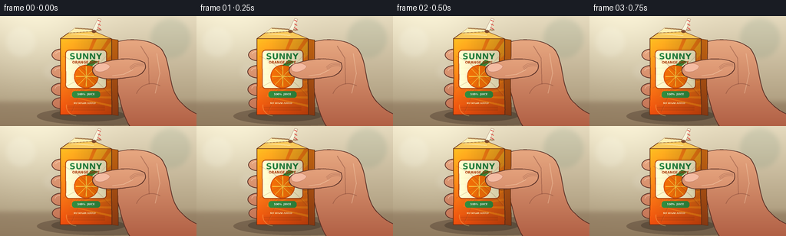
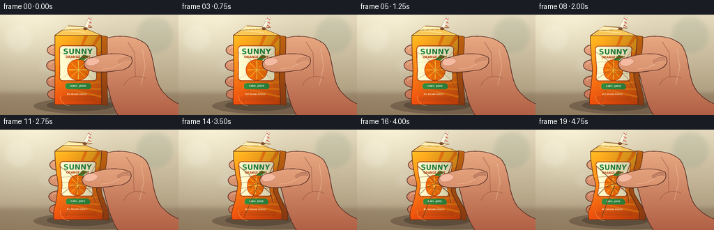
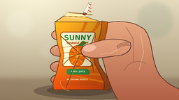

CODING AGENTS AS PIXEL WORLD MODELS
traex/GPT-5.6-Sol · mechanics_0019
点击播放 · 原生 RGB 像素
逐轮保存的候选
回放视频、检查图与代码变化。
每份候选均可单独播放。实际图片检查记录在下方工具轨迹中。
候选 01播放与检查图
点击播放 · 原生 RGB 像素


展开代码变化
--- 上一保存版本
+++ 本次保存版本
@@ -0,0 +1,280 @@
+from pathlib import Path
+import math
+import numpy as np
+from PIL import Image, ImageDraw, ImageFont, ImageFilter
+import artifact_io
+
+W, H, N = 256, 144, 20
+S = 4
+OUT = Path(__file__).resolve().parent
+
+try:
+ FONT_BOLD = "/usr/share/fonts/truetype/dejavu/DejaVuSans-Bold.ttf"
+ FONT_REG = "/usr/share/fonts/truetype/dejavu/DejaVuSans.ttf"
+except Exception:
+ FONT_BOLD = FONT_REG = None
+
+def font(path, size):
+ try: return ImageFont.truetype(path, size)
+ except Exception: return ImageFont.load_default()
+
+def P(points):
+ return [(int(x*S), int(y*S)) for x,y in points]
+
+def cubic(a,b,c,d,n=18):
+ out=[]
+ for i in range(n):
+ t=i/(n-1); q=1-t
+ out.append((q**3*a[0]+3*q*q*t*b[0]+3*q*t*t*c[0]+t**3*d[0],
+ q**3*a[1]+3*q*q*t*b[1]+3*q*t*t*c[1]+t**3*d[1]))
+ return out
+
+def shape_gradient(im, points, top=(244,183,139), bottom=(186,105,74), outline=(92,48,36), width=1.1):
+ mask=Image.new('L', im.size, 0); md=ImageDraw.Draw(mask)
+ md.polygon(P(points), fill=255)
+ yy=np.linspace(0,1,im.size[1])[:,None,None]
+ a=np.array(top)[None,None,:]; b=np.array(bottom)[None,None,:]
+ arr=np.repeat((a*(1-yy)+b*yy).astype(np.uint8), im.size[0], axis=1)
+ layer=Image.fromarray(arr,'RGB')
+ im.paste(layer,(0,0),mask)
+ dr=ImageDraw.Draw(im)
+ dr.line(P(points+[points[0]]), fill=outline, width=max(1,int(width*S)), joint='curve')
+
+def ellipse_gradient(im, box, top, bottom, outline, width=1):
+ mask=Image.new('L', im.size, 0); d=ImageDraw.Draw(mask)
+ bb=tuple(int(v*S) for v in box); d.ellipse(bb,fill=255)
+ yy=np.linspace(0,1,im.size[1])[:,None,None]
+ a=np.array(top)[None,None,:]; b=np.array(bottom)[None,None,:]
+ arr=np.repeat((a*(1-yy)+b*yy).astype(np.uint8), im.size[0], axis=1)
+ im.paste(Image.fromarray(arr,'RGB'),(0,0),mask)
+ ImageDraw.Draw(im).ellipse(bb,outline=outline,width=max(1,int(width*S)))
+
+def front_bounds(y,p):
+ top,bottom=29.5,129.0
+ t=np.clip((y-top)/(bottom-top),0,1)
+ g1=math.exp(-((t-.56)/.20)**2)
+ g2=math.exp(-((t-.30)/.16)**2)
+ gb=math.exp(-((t-.92)/.13)**2)
+ # pressure narrows both walls while the lower contents bulge
+ left=78.5 + p*(7.0*g1+2.0*g2-3.0*gb)
+ right=145.5 - p*(10.5*g1+3.0*g2-4.0*gb)
+ # slight pinching irregularity makes the carton feel crumpled, not rubbery
+ left += p*1.1*math.sin(t*5.5*math.pi)*g1
+ right -= p*.8*math.sin(t*4.4*math.pi+0.5)*g1
+ return left,right
+
+def make_texture():
+ tw,th=360,540
+ y=np.linspace(0,1,th)[:,None,None]
+ top=np.array([255,178,32])[None,None,:]
+ bot=np.array([224,73,13])[None,None,:]
+ arr=np.repeat((top*(1-y)+bot*y).astype(np.uint8),tw,axis=1)
+ tex=Image.fromarray(arr,'RGB'); d=ImageDraw.Draw(tex)
+ # fresh citrus rays
+ cx,cy=70,410
+ for ang in np.linspace(-1.2,.2,8):
+ x=cx+520*math.cos(ang); yy=cy+520*math.sin(ang)
+ d.polygon([(cx,cy),(int(x),int(yy)),(int(cx+520*math.cos(ang+.055)),int(cy+520*math.sin(ang+.055)))], fill=(246,124,19))
+ # cream label
+ d.rounded_rectangle((34,78,326,355),radius=28,fill=(255,246,202),outline=(174,67,18),width=6)
+ d.ellipse((95,185,267,351),fill=(246,112,8),outline=(211,70,5),width=5)
+ # orange segments
+ d.line((181,196,181,338),fill=(255,204,68),width=6)
+ d.line((108,267,254,267),fill=(255,204,68),width=6)
+ d.line((126,213,237,325),fill=(255,204,68),width=5)
+ d.line((235,213,127,326),fill=(255,204,68),width=5)
+ # leaf
+ d.polygon([(182,187),(222,149),(263,162),(222,194)],fill=(61,143,58))
+ d.line((184,188,244,160),fill=(35,101,40),width=6)
+ f1=font(FONT_BOLD,58); f2=font(FONT_BOLD,24); f3=font(FONT_BOLD,18)
+ title='SUNNY'
+ box=d.textbbox((0,0),title,font=f1,stroke_width=1); tx=(tw-(box[2]-box[0]))//2
+ d.text((tx,91),title,font=f1,fill=(37,129,61),stroke_width=2,stroke_fill=(250,255,221))
+ sub='ORANGE JUICE'; box=d.textbbox((0,0),sub,font=f2); tx=(tw-(box[2]-box[0]))//2
+ d.text((tx,153),sub,font=f2,fill=(180,62,14))
+ d.rounded_rectangle((82,372,278,418),radius=18,fill=(49,141,64))
+ s='100% JUICE'; box=d.textbbox((0,0),s,font=f3); tx=(tw-(box[2]-box[0]))//2
+ d.text((tx,383),s,font=f3,fill='white')
+ d.text((94,448),'NO SUGAR ADDED',font=font(FONT_BOLD,15),fill=(255,241,195))
+ # fine print marks
+ for k in range(4):
+ d.line((50,478+k*9,310,478+k*9),fill=(170,62,15),width=2)
+ return np.asarray(tex)
+
+TEXTURE=make_texture()
+
+def background():
+ hh,ww=H*S,W*S
+ Y,X=np.mgrid[0:hh,0:ww]
+ # warm kitchen, soft daylight at upper left
+ t=Y/hh
+ base=np.zeros((hh,ww,3),dtype=float)
+ base[:,:,0]=229-68*t
+ base[:,:,1]=218-75*t
+ base[:,:,2]=190-78*t
+ glow=np.exp(-((X-48*S)**2+(Y-22*S)**2)/(2*(55*S)**2))
+ base += glow[:,:,None]*np.array([21,25,25])
+ im=Image.fromarray(np.clip(base,0,255).astype(np.uint8),'RGB')
+ d=ImageDraw.Draw(im,'RGBA')
+ # out of focus kitchen objects / tiles
+ for bx,by,r,col in [(27,34,19,(255,255,242,48)),(222,29,26,(84,125,104,35)),(192,68,14,(255,229,160,30)),(67,73,10,(255,255,255,24))]:
+ d.ellipse(((bx-r)*S,(by-r)*S,(bx+r)*S,(by+r)*S),fill=col)
+ d.line((0,112*S,W*S,112*S),fill=(105,77,57,90),width=S)
+ d.rectangle((0,113*S,W*S,H*S),fill=(98,69,48,78))
+ # counter grain
+ for y in [119,132,139]: d.line((0,y*S,W*S,y*S),fill=(255,220,171,16),width=1*S)
+ return im.filter(ImageFilter.GaussianBlur(3.0*S))
+
+BG=background()
+
+def render_frame(idx):
+ q=idx/(N-1)
+ # accelerating squeeze pressure; every frame changes, strongest change near end
+ p=0.04 + .96*(q*q*(3-2*q))
+ im=BG.copy(); d=ImageDraw.Draw(im,'RGBA')
+ # tabletop contact shadow and carton/hand cast shadow
+ d.ellipse((48*S,119*S,224*S,143*S),fill=(42,26,19,72))
+ d.ellipse((67*S,122*S,163*S,138*S),fill=(25,18,14,68))
+
+ # back of hand and forearm, moving subtly inward as pressure rises
+ hshift=3.2*(1-p)
+ palm = []
+ palm += cubic((137+hshift,39),(158+hshift,27),(191+hshift,28),(207+hshift,43),18)
+ palm += cubic((207+hshift,43),(220+hshift,60),(215+hshift,89),(229+hshift,109),16)[1:]
+ palm += cubic((229+hshift,109),(240+hshift,122),(252,126),(258,129),12)[1:]
+ palm += [(258,147),(171,147)]
+ palm += cubic((171,147),(161,133),(155+hshift,116),(151+hshift,101),14)[1:]
+ palm += cubic((151+hshift,101),(146+hshift,76),(135+hshift,58),(137+hshift,39),16)[1:]
+ shape_gradient(im,palm,(247,188,146),(177,96,69),(92,48,38),1.2)
+ d=ImageDraw.Draw(im,'RGBA')
+ # palm modeling and bent knuckles
+ d.line(P([(180+hshift,39),(190+hshift,55),(191+hshift,89)]),fill=(118,61,48,105),width=1*S)
+ d.line(P([(201+hshift,49),(205+hshift,75),(199+hshift,101)]),fill=(255,224,190,90),width=1*S)
+ d.arc((176*S,88*S,219*S,129*S),200,302,fill=(114,57,44,100),width=S)
+
+ # fingertips curl around the left side, behind the package at first
+ finger_ys=[51,73,96,114]
+ finger_sizes=[(25,16),(27,17),(26,17),(23,15)]
+ for j,(fy,(fw,fh)) in enumerate(zip(finger_ys,finger_sizes)):
+ intrude=(2.2+6.2*p)*(1-.08*j)
+ cx=77.5+intrude
+ cy=fy + (j-1.5)*.35*p
+ ellipse_gradient(im,(cx-fw/2,cy-fh/2,cx+fw/2,cy+fh/2),
+ (250,193,151),(187,104,75),(91,48,38),1)
+ dd=ImageDraw.Draw(im,'RGBA')
+ # small nail glints on visible curled pads
+ if j<3:
+ dd.arc(((cx-fw*.31)*S,(cy-fh*.31)*S,(cx+fw*.12)*S,(cy+fh*.23)*S),185,350,fill=(255,226,205,120),width=S)
+
+ # carton side face (lies behind front face)
+ ys=np.linspace(30,129,80)
+ right=[front_bounds(float(y),p)[1] for y in ys]
+ side_outer=[(r+8.5-2.0*p*math.exp(-((y-84)/25)**2),y+1.4) for y,r in zip(ys,right)]
+ sidepoly=list(zip(right,ys))+side_outer[::-1]
+ shape_gradient(im,sidepoly,(208,113,17),(128,50,17),(91,44,22),.8)
+
+ # warped carton front texture
+ arr=np.zeros((H*S,W*S,3),dtype=np.uint8)
+ mask=np.zeros((H*S,W*S),dtype=np.uint8)
+ th,tw,_=TEXTURE.shape
+ top=29.5+2.0*p; bottom=129.0
+ for yy in range(max(0,int(top*S)),min(H*S,int(bottom*S)+1)):
+ y=yy/S; t=(y-top)/(bottom-top)
+ l,r=front_bounds(y,p)
+ # progressively collapse top shoulder too
+ if t<.08:
+ l += p*(.08-t)*18; r -= p*(.08-t)*22
+ xa=max(0,int(l*S)); xb=min(W*S,int(r*S)+1)
+ if xb<=xa: continue
+ u=np.linspace(0,tw-1,xb-xa).astype(np.int32)
+ v=min(th-1,max(0,int(t*(th-1))))
+ row=TEXTURE[v,u]
+ # physical directional lighting and slight paper texture
+ shade=np.linspace(1.08,.80,xb-xa)[:,None]
+ row=np.clip(row.astype(float)*shade,0,255).astype(np.uint8)
+ arr[yy,xa:xb]=row; mask[yy,xa:xb]=255
+ im.paste(Image.fromarray(arr), (0,0), Image.fromarray(mask))
+ d=ImageDraw.Draw(im,'RGBA')
+ # front boundary outline
+ leftpts=[]; rightpts=[]
+ for y in np.linspace(top,bottom,100):
+ l,r=front_bounds(float(y),p); leftpts.append((l,y)); rightpts.append((r,y))
+ d.line(P(leftpts),fill=(103,48,18,210),width=S)
+ d.line(P(rightpts),fill=(85,43,23,220),width=S)
+ d.line(P([(leftpts[-1][0],bottom),(rightpts[-1][0],bottom)]),fill=(91,43,21,210),width=S)
+
+ # folded carton top / gable, visibly buckles under high pressure
+ lt,rt=front_bounds(top,p)
+ ridge_y=20.0+4.0*p
+ top_poly=[(lt,top),(89+2*p,22+p),(123-1*p,ridge_y),(rt,top)]
+ shape_gradient(im,top_poly,(255,220,105),(225,112,22),(108,52,21),.9)
+ d=ImageDraw.Draw(im,'RGBA')
+ d.polygon(P([(89+2*p,22+p),(98,15+2*p),(132,18+3*p),(123-p,ridge_y)]),fill=(255,238,175,255),outline=(111,62,28,255))
+ d.line(P([(98,16+2*p),(132,18+3*p)]),fill=(125,69,34,230),width=S)
+ d.line(P([(92,23+p),(122,25+3*p)]),fill=(255,248,211,180),width=S)
+
+ # striped drinking straw, fixed in puncture but bends slightly under timelapse squeeze
+ sx=122.5-1.5*p
+ straw=[(sx-2.4,19),(128-1*p,3),(132-1*p,4),(sx+2.3,21)]
+ d.polygon(P(straw),fill=(247,245,220,255),outline=(128,69,53,255))
+ for k in range(3):
+ yy=5+k*5
+ d.line(P([(127.5-k*.15-p,yy),(131-p,yy+2)]),fill=(218,54,46,255),width=1*S)
+ d.ellipse(((sx-3)*S,(18.2)*S,(sx+3)*S,(22.2)*S),fill=(116,61,31,220))
+
+ # paper creases grow with pressure: opposing diagonals converge on squeezed waist
+ alpha=int(35+155*p)
+ crease_specs=[
+ [(82+5*p,52),(99,61+2*p),(112,72+3*p)],
+ [(143-7*p,48),(131,60+2*p),(117,73+3*p)],
+ [(82+7*p,94),(101,84-2*p),(116,76)],
+ [(144-10*p,104),(132,91),(117,78)],
+ [(93+2*p,126),(104,102),(114,80)],
+ ]
+ for pts in crease_specs:
+ d.line(P(pts),fill=(105,48,18,alpha),width=max(S,int((.45+1.1*p)*S)),joint='curve')
+ # highlight alongside fold
+ off=[(x+1.2,y-.6) for x,y in pts]
+ d.line(P(off),fill=(255,230,131,int(alpha*.65)),width=max(1,int(.65*S)),joint='curve')
+ # compressed horizontal wrinkle bands
+ for k in range(3):
+ yy=68+k*8
+ l,r=front_bounds(yy,p)
+ amp=(1.0+k*.2)*p
+ pts=[(l+5,yy),(l+(r-l)*.32,yy-amp),(l+(r-l)*.66,yy+amp),(r-3,yy-.4*amp)]
+ d.line(P(pts),fill=(116,50,18,int(125*p)),width=S)
+
+ # thumb crosses the face and is the dominant squeezing cue
+ hs=2.5*(1-p)
+ tipx=121.5-5.0*p
+ thumb=[]
+ thumb += cubic((186+hs,61),(171+hs,54),(149+hs,55),(tipx+9,62+2*p),17)
+ thumb += cubic((tipx+9,62+2*p),(tipx-2,65+2*p),(tipx-3,72+2*p),(tipx+2,77+2*p),12)[1:]
+ thumb += cubic((tipx+2,77+2*p),(tipx+13,85+2*p),(151+hs,82),(174+hs,79),17)[1:]
+ thumb += cubic((174+hs,79),(184+hs,76),(190+hs,69),(186+hs,61),12)[1:]
+ shape_gradient(im,thumb,(252,196,154),(190,107,77),(88,47,38),1.2)
+ d=ImageDraw.Draw(im,'RGBA')
+ # thumbnail and pad highlights
+ nail=[]
+ nail += cubic((tipx+4,64+2*p),(tipx+11,60+2*p),(tipx+20,62+1.5*p),(tipx+22,66+2*p),12)
+ nail += cubic((tipx+22,66+2*p),(tipx+20,71+2*p),(tipx+10,75+2*p),(tipx+4,72+2*p),12)[1:]
+ nail += cubic((tipx+4,72+2*p),(tipx+1,69+2*p),(tipx+2,66+2*p),(tipx+4,64+2*p),10)[1:]
+ d.polygon(P(nail),fill=(246,190,166,235),outline=(153,82,69,230))
+ d.line(P([(144+hs,78),(159+hs,76),(171+hs,70)]),fill=(255,225,191,105),width=S)
+ # pressure wrinkles around thumb joint intensify
+ for off in [0,4,8]:
+ d.arc(((165+hs+off*.25)*S,(61+off*.45)*S,(194+hs)*S,(82+off*.2)*S),205,292,
+ fill=(116,59,48,int(55+80*p)),width=S)
+
+ # contact shadow along thumb underside sells depth
+ d.line(P([(tipx+5,79+2*p),(139+hs,84),(161+hs,81)]),fill=(69,34,26,int(75+75*p)),width=S)
+ # a tiny specular glint on carton's lower bulge
+ d.arc((86*S,105*S,115*S,131*S),96,190,fill=(255,226,130,80),width=S)
+
+ # downsample antialiased high resolution render
+ im=im.resize((W,H),Image.Resampling.LANCZOS)
+ return np.asarray(im,dtype=np.uint8)
+
+frames=np.stack([render_frame(i) for i in range(N)],axis=0)
+artifact_io.save(frames, OUT)
+print('saved',frames.shape,frames.dtype)
可观测工具轨迹
实际执行的命令与返回图片。
命令 1exit 0
/bin/bash -lc "cat prompt.txt && printf '\\n---RULES---\\n' && cat GENERATION_RULES.md && printf '\\n---SPEC---\\n' && cat task_spec.json"
命令 2exit 0
/bin/bash -lc "find . -maxdepth 2 -type f -printf '%p\\n' | sort && printf '\\nTOOLS\\n' && command -v blender || true && command -v ffmpeg || true && command -v python3 || true"
命令 3exit 0
/bin/bash -lc 'cat artifact_io.py'
命令 4exit 0
/bin/bash -lc "cat > generate.py <<'PY'
from pathlib import Path
import math
import numpy as np
from PIL import Image, ImageDraw, ImageFont, ImageFilter
import artifact_io
W, H, N = 256, 144, 20
S = 4
OUT = Path(__file__).resolve().parent
try:
FONT_BOLD = \"/usr/share/fonts/truetype/dejavu/DejaVuSans-Bold.ttf\"
FONT_REG = \"/usr/share/fonts/truetype/dejavu/DejaVuSans.ttf\"
except Exception:
FONT_BOLD = FONT_REG = None
def font(path, size):
try: return ImageFont.truetype(path, size)
except Exception: return ImageFont.load_default()
def P(points):
return [(int(x*S), int(y*S)) for x,y in points]
def cubic(a,b,c,d,n=18):
out=[]
for i in range(n):
t=i/(n-1); q=1-t
out.append((q**3*a[0]+3*q*q*t*b[0]+3*q*t*t*c[0]+t**3*d[0],
q**3*a[1]+3*q*q*t*b[1]+3*q*t*t*c[1]+t**3*d[1]))
return out
def shape_gradient(im, points, top=(244,183,139), bottom=(186,105,74), outline=(92,48,36), width=1.1):
mask=Image.new('L', im.size, 0); md=ImageDraw.Draw(mask)
md.polygon(P(points), fill=255)
yy=np.linspace(0,1,im.size[1])[:,None,None]
a=np.array(top)[None,None,:]; b=np.array(bottom)[None,None,:]
arr=np.repeat((a*(1-yy)+b*yy).astype(np.uint8), im.size[0], axis=1)
layer=Image.fromarray(arr,'RGB')
im.paste(layer,(0,0),mask)
dr=ImageDraw.Draw(im)
dr.line(P(points+[points[0]]), fill=outline, width=max(1,int(width*S)), joint='curve')
def ellipse_gradient(im, box, top, bottom, outline, width=1):
mask=Image.new('L', im.size, 0); d=ImageDraw.Draw(mask)
bb=tuple(int(v*S) for v in box); d.ellipse(bb,fill=255)
yy=np.linspace(0,1,im.size[1])[:,None,None]
a=np.array(top)[None,None,:]; b=np.array(bottom)[None,None,:]
arr=np.repeat((a*(1-yy)+b*yy).astype(np.uint8), im.size[0], axis=1)
im.paste(Image.fromarray(arr,'RGB'),(0,0),mask)
ImageDraw.Draw(im).ellipse(bb,outline=outline,width=max(1,int(width*S)))
def front_bounds(y,p):
top,bottom=29.5,129.0
t=np.clip((y-top)/(bottom-top),0,1)
g1=math.exp(-((t-.56)/.20)**2)
g2=math.exp(-((t-.30)/.16)**2)
gb=math.exp(-((t-.92)/.13)**2)
# pressure narrows both walls while the lower contents bulge
left=78.5 + p*(7.0*g1+2.0*g2-3.0*gb)
right=145.5 - p*(10.5*g1+3.0*g2-4.0*gb)
# slight pinching irregularity makes the carton feel crumpled, not rubbery
left += p*1.1*math.sin(t*5.5*math.pi)*g1
right -= p*.8*math.sin(t*4.4*math.pi+0.5)*g1
return left,right
def make_texture():
tw,th=360,540
y=np.linspace(0,1,th)[:,None,None]
top=np.array([255,178,32])[None,None,:]
bot=np.array([224,73,13])[None,None,:]
arr=np.repeat((top*(1-y)+bot*y).astype(np.uint8),tw,axis=1)
tex=Image.fromarray(arr,'RGB'); d=ImageDraw.Draw(tex)
# fresh citrus rays
cx,cy=70,410
for ang in np.linspace(-1.2,.2,8):
x=cx+520*math.cos(ang); yy=cy+520*math.sin(ang)
d.polygon([(cx,cy),(int(x),int(yy)),(int(cx+520*math.cos(ang+.055)),int(cy+520*math.sin(ang+.055)))], fill=(246,124,19))
# cream label
d.rounded_rectangle((34,78,326,355),radius=28,fill=(255,246,202),outline=(174,67,18),width=6)
d.ellipse((95,185,267,351),fill=(246,112,8),outline=(211,70,5),width=5)
# orange segments
d.line((181,196,181,338),fill=(255,204,68),width=6)
d.line((108,267,254,267),fill=(255,204,68),width=6)
d.line((126,213,237,325),fill=(255,204,68),width=5)
d.line((235,213,127,326),fill=(255,204,68),width=5)
# leaf
d.polygon([(182,187),(222,149),(263,162),(222,194)],fill=(61,143,58))
d.line((184,188,244,160),fill=(35,101,40),width=6)
f1=font(FONT_BOLD,58); f2=font(FONT_BOLD,24); f3=font(FONT_BOLD,18)
title='SUNNY'
box=d.textbbox((0,0),title,font=f1,stroke_width=1); tx=(tw-(box[2]-box[0]))//2
d.text((tx,91),title,font=f1,fill=(37,129,61),stroke_width=2,stroke_fill=(250,255,221))
sub='ORANGE JUICE'; box=d.textbbox((0,0),sub,font=f2); tx=(tw-(box[2]-box[0]))//2
d.text((tx,153),sub,font=f2,fill=(180,62,14))
d.rounded_rectangle((82,372,278,418),radius=18,fill=(49,141,64))
s='100% JUICE'; box=d.textbbox((0,0),s,font=f3); tx=(tw-(box[2]-box[0]))//2
d.text((tx,383),s,font=f3,fill='white')
d.text((94,448),'NO SUGAR ADDED',font=font(FONT_BOLD,15),fill=(255,241,195))
# fine print marks
for k in range(4):
d.line((50,478+k*9,310,478+k*9),fill=(170,62,15),width=2)
return np.asarray(tex)
TEXTURE=make_texture()
def background():
hh,ww=H*S,W*S
Y,X=np.mgrid[0:hh,0:ww]
# warm kitchen, soft daylight at upper left
t=Y/hh
base=np.zeros((hh,ww,3),dtype=float)
base[:,:,0]=229-68*t
base[:,:,1]=218-75*t
base[:,:,2]=190-78*t
glow=np.exp(-((X-48*S)**2+(Y-22*S)**2)/(2*(55*S)**2))
base += glow[:,:,None]*np.array([21,25,25])
im=Image.fromarray(np.clip(base,0,255).astype(np.uint8),'RGB')
d=ImageDraw.Draw(im,'RGBA')
# out of focus kitchen objects / tiles
for bx,by,r,col in [(27,34,19,(255,255,242,48)),(222,29,26,(84,125,104,35)),(192,68,14,(255,229,160,30)),(67,73,10,(255,255,255,24))]:
d.ellipse(((bx-r)*S,(by-r)*S,(bx+r)*S,(by+r)*S),fill=col)
d.line((0,112*S,W*S,112*S),fill=(105,77,57,90),width=S)
d.rectangle((0,113*S,W*S,H*S),fill=(98,69,48,78))
# counter grain
for y in [119,132,139]: d.line((0,y*S,W*S,y*S),fill=(255,220,171,16),width=1*S)
return im.filter(ImageFilter.GaussianBlur(3.0*S))
BG=background()
def render_frame(idx):
q=idx/(N-1)
# accelerating squeeze pressure; every frame changes, strongest change near end
p=0.04 + .96*(q*q*(3-2*q))
im=BG.copy(); d=ImageDraw.Draw(im,'RGBA')
# tabletop contact shadow and carton/hand cast shadow
d.ellipse((48*S,119*S,224*S,143*S),fill=(42,26,19,72))
d.ellipse((67*S,122*S,163*S,138*S),fill=(25,18,14,68))
# back of hand and forearm, moving subtly inward as pressure rises
hshift=3.2*(1-p)
palm = []
palm += cubic((137+hshift,39),(158+hshift,27),(191+hshift,28),(207+hshift,43),18)
palm += cubic((207+hshift,43),(220+hshift,60),(215+hshift,89),(229+hshift,109),16)[1:]
palm += cubic((229+hshift,109),(240+hshift,122),(252,126),(258,129),12)[1:]
palm += [(258,147),(171,147)]
palm += cubic((171,147),(161,133),(155+hshift,116),(151+hshift,101),14)[1:]
palm += cubic((151+hshift,101),(146+hshift,76),(135+hshift,58),(137+hshift,39),16)[1:]
shape_gradient(im,palm,(247,188,146),(177,96,69),(92,48,38),1.2)
d=ImageDraw.Draw(im,'RGBA')
# palm modeling and bent knuckles
d.line(P([(180+hshift,39),(190+hshift,55),(191+hshift,89)]),fill=(118,61,48,105),width=1*S)
d.line(P([(201+hshift,49),(205+hshift,75),(199+hshift,101)]),fill=(255,224,190,90),width=1*S)
d.arc((176*S,88*S,219*S,129*S),200,302,fill=(114,57,44,100),width=S)
# fingertips curl around the left side, behind the package at first
finger_ys=[51,73,96,114]
finger_sizes=[(25,16),(27,17),(26,17),(23,15)]
for j,(fy,(fw,fh)) in enumerate(zip(finger_ys,finger_sizes)):
intrude=(2.2+6.2*p)*(1-.08*j)
cx=77.5+intrude
cy=fy + (j-1.5)*.35*p
ellipse_gradient(im,(cx-fw/2,cy-fh/2,cx+fw/2,cy+fh/2),
(250,193,151),(187,104,75),(91,48,38),1)
dd=ImageDraw.Draw(im,'RGBA')
# small nail glints on visible curled pads
if j<3:
dd.arc(((cx-fw*.31)*S,(cy-fh*.31)*S,(cx+fw*.12)*S,(cy+fh*.23)*S),185,350,fill=(255,226,205,120),width=S)
# carton side face (lies behind front face)
ys=np.linspace(30,129,80)
right=[front_bounds(float(y),p)[1] for y in ys]
side_outer=[(r+8.5-2.0*p*math.exp(-((y-84)/25)**2),y+1.4) for y,r in zip(ys,right)]
sidepoly=list(zip(right,ys))+side_outer[::-1]
shape_gradient(im,sidepoly,(208,113,17),(128,50,17),(91,44,22),.8)
# warped carton front texture
arr=np.zeros((H*S,W*S,3),dtype=np.uint8)
mask=np.zeros((H*S,W*S),dtype=np.uint8)
th,tw,_=TEXTURE.shape
top=29.5+2.0*p; bottom=129.0
for yy in range(max(0,int(top*S)),min(H*S,int(bottom*S)+1)):
y=yy/S; t=(y-top)/(bottom-top)
l,r=front_bounds(y,p)
# progressively collapse top shoulder too
if t<.08:
l += p*(.08-t)*18; r -= p*(.08-t)*22
xa=max(0,int(l*S)); xb=min(W*S,int(r*S)+1)
if xb<=xa: continue
u=np.linspace(0,tw-1,xb-xa).astype(np.int32)
v=min(th-1,max(0,int(t*(th-1))))
row=TEXTURE[v,u]
# physical directional lighting and slight paper texture
shade=np.linspace(1.08,.80,xb-xa)[:,None]
row=np.clip(row.astype(float)*shade,0,255).astype(np.uint8)
arr[yy,xa:xb]=row; mask[yy,xa:xb]=255
im.paste(Image.fromarray(arr), (0,0), Image.fromarray(mask))
d=ImageDraw.Draw(im,'RGBA')
# front boundary outline
leftpts=[]; rightpts=[]
for y in np.linspace(top,bottom,100):
l,r=front_bounds(float(y),p); leftpts.append((l,y)); rightpts.append((r,y))
d.line(P(leftpts),fill=(103,48,18,210),width=S)
d.line(P(rightpts),fill=(85,43,23,220),width=S)
d.line(P([(leftpts[-1][0],bottom),(rightpts[-1][0],bottom)]),fill=(91,43,21,210),width=S)
# folded carton top / gable, visibly buckles under high pressure
lt,rt=front_bounds(top,p)
ridge_y=20.0+4.0*p
top_poly=[(lt,top),(89+2*p,22+p),(123-1*p,ridge_y),(rt,top)]
shape_gradient(im,top_poly,(255,220,105),(225,112,22),(108,52,21),.9)
d=ImageDraw.Draw(im,'RGBA')
d.polygon(P([(89+2*p,22+p),(98,15+2*p),(132,18+3*p),(123-p,ridge_y)]),fill=(255,238,175,255),outline=(111,62,28,255))
d.line(P([(98,16+2*p),(132,18+3*p)]),fill=(125,69,34,230),width=S)
d.line(P([(92,23+p),(122,25+3*p)]),fill=(255,248,211,180),width=S)
# striped drinking straw, fixed in puncture but bends slightly under timelapse squeeze
sx=122.5-1.5*p
straw=[(sx-2.4,19),(128-1*p,3),(132-1*p,4),(sx+2.3,21)]
d.polygon(P(straw),fill=(247,245,220,255),outline=(128,69,53,255))
for k in range(3):
yy=5+k*5
d.line(P([(127.5-k*.15-p,yy),(131-p,yy+2)]),fill=(218,54,46,255),width=1*S)
d.ellipse(((sx-3)*S,(18.2)*S,(sx+3)*S,(22.2)*S),fill=(116,61,31,220))
# paper creases grow with pressure: opposing diagonals converge on squeezed waist
alpha=int(35+155*p)
crease_specs=[
[(82+5*p,52),(99,61+2*p),(112,72+3*p)],
[(143-7*p,48),(131,60+2*p),(117,73+3*p)],
[(82+7*p,94),(101,84-2*p),(116,76)],
[(144-10*p,104),(132,91),(117,78)],
[(93+2*p,126),(104,102),(114,80)],
]
for pts in crease_specs:
d.line(P(pts),fill=(105,48,18,alpha),width=max(S,int((.45+1.1*p)*S)),joint='curve')
# highlight alongside fold
off=[(x+1.2,y-.6) for x,y in pts]
d.line(P(off),fill=(255,230,131,int(alpha*.65)),width=max(1,int(.65*S)),joint='curve')
# compressed horizontal wrinkle bands
for k in range(3):
yy=68+k*8
l,r=front_bounds(yy,p)
amp=(1.0+k*.2)*p
pts=[(l+5,yy),(l+(r-l)*.32,yy-amp),(l+(r-l)*.66,yy+amp),(r-3,yy-.4*amp)]
d.line(P(pts),fill=(116,50,18,int(125*p)),width=S)
# thumb crosses the face and is the dominant squeezing cue
hs=2.5*(1-p)
tipx=121.5-5.0*p
thumb=[]
thumb += cubic((186+hs,61),(171+hs,54),(149+hs,55),(tipx+9,62+2*p),17)
thumb += cubic((tipx+9,62+2*p),(tipx-2,65+2*p),(tipx-3,72+2*p),(tipx+2,77+2*p),12)[1:]
thumb += cubic((tipx+2,77+2*p),(tipx+13,85+2*p),(151+hs,82),(174+hs,79),17)[1:]
thumb += cubic((174+hs,79),(184+hs,76),(190+hs,69),(186+hs,61),12)[1:]
shape_gradient(im,thumb,(252,196,154),(190,107,77),(88,47,38),1.2)
d=ImageDraw.Draw(im,'RGBA')
# thumbnail and pad highlights
nail=[]
nail += cubic((tipx+4,64+2*p),(tipx+11,60+2*p),(tipx+20,62+1.5*p),(tipx+22,66+2*p),12)
nail += cubic((tipx+22,66+2*p),(tipx+20,71+2*p),(tipx+10,75+2*p),(tipx+4,72+2*p),12)[1:]
nail += cubic((tipx+4,72+2*p),(tipx+1,69+2*p),(tipx+2,66+2*p),(tipx+4,64+2*p),10)[1:]
d.polygon(P(nail),fill=(246,190,166,235),outline=(153,82,69,230))
d.line(P([(144+hs,78),(159+hs,76),(171+hs,70)]),fill=(255,225,191,105),width=S)
# pressure wrinkles around thumb joint intensify
for off in [0,4,8]:
d.arc(((165+hs+off*.25)*S,(61+off*.45)*S,(194+hs)*S,(82+off*.2)*S),205,292,
fill=(116,59,48,int(55+80*p)),width=S)
# contact shadow along thumb underside sells depth
d.line(P([(tipx+5,79+2*p),(139+hs,84),(161+hs,81)]),fill=(69,34,26,int(75+75*p)),width=S)
# a tiny specular glint on carton's lower bulge
d.arc((86*S,105*S,115*S,131*S),96,190,fill=(255,226,130,80),width=S)
# downsample antialiased high resolution render
im=im.resize((W,H),Image.Resampling.LANCZOS)
return np.asarray(im,dtype=np.uint8)
frames=np.stack([render_frame(i) for i in range(N)],axis=0)
artifact_io.save(frames, OUT)
print('saved',frames.shape,frames.dtype)
PY
python3 generate.py"命令 5exit 0
/bin/bash -lc "python3 - <<'PY'
from pathlib import Path
import numpy as np
from PIL import Image
p=Path('.')
a=np.load('pixels.npz')['pixels']
print('pixels', a.shape, a.dtype)
print('frames', len(list((p/'frames').glob('*.png'))))
for f in ['pixels.npz','index.html','inspection.png','transition_check.png','generate.py']:
print(f, (p/f).stat().st_size)
ims=[np.asarray(Image.open(f'frames/{i:02d}.png')) for i in range(20)]
print('frame shapes',ims[0].shape,'modes',Image.open('frames/00.png').mode)
print('mean consecutive MAE',round(float(np.mean([np.abs(ims[i].astype(int)-ims[i-1].astype(int)).mean() for i in range(1,20)])),3))
PY"视觉工具实际返回图片 1

视觉工具实际返回图片 2

保存候选 1 份；完成命令 5 次；可验证图片返回 2 张。原始 API 响应与完整日志保留在本地。